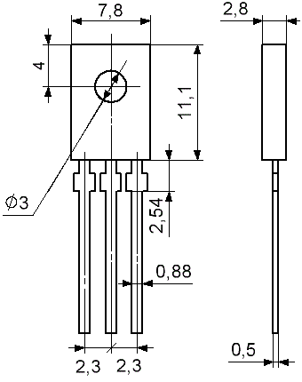
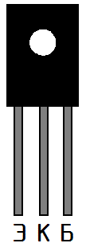
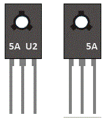

Транзистор КТ815
Транзистор КТ815 – биполярный, кремневый эпитаксиально-планарный, имеющий структуру n-p-n. Применяется в схемах усилителей низкой частоты (УНЧ), в дифференциальных и операционных усилителях, в импульсных устройствах и различных преобразователей. Транзистор КТ815 выполнен в пластмассовом корпусе КТ-27 (ТО-126) и имеет жесткие выводы.

Рис. 1 - Габаритные размеры транзистора КТ815
При монтаже допускается сгибать выводы не ближе 5 мм от самого корпуса транзистора и желательно с радиусом закругления не менее 2 мм. Так же необходимо исключить передачу усилия при сгибании выводов на корпус транзистора.
Производить пайку контактов транзистора следует не ближе 5 мм от корпуса. Температура пайки не более 250°C при погружении выводов в припой на период не более 2 сек.

Рис. 2 - Цоколевка КТ815 транзистора в корпусе КТ-27 (ТО-126)

Рис. 3 - Маркировка транзистора КТ815
(цифра 5 указывает на тип транзистора (КТ815), буква А – группа, U2 – дата выпуска).
Таблица 1
| Наименование | Uкбо и, В | Uкэо и, В | Iкmax и, мА | Pкmax т, Вт | h21э | Iкбо, мкА | fгр, МГц | Uкэн, В |
|---|---|---|---|---|---|---|---|---|
| КТ815А | 40 | 30 | 1500(3000) | 1(10) | 40-275 | ≤50 | ≥3 | <0.6 |
| КТ815Б | 50 | 45 | 1500(3000) | 1(10) | 40-275 | ≤50 | ≥3 | <0.6 |
| КТ815В | 70 | 65 | 1500(3000) | 1(10) | 40-275 | ≤50 | ≥3 | <0.6 |
| КТ815Г | 100 | 85 | 1500(3000) | 1(10) | 30-275 | ≤50 | ≥3 | <0.6 |
Условные обозначения электрических параметров транзисторов
Аналоги транзистора КТ815
- отечественные - КТ8272, КТ961,
- зарубежные - BD135, BD137, BD139, TIP29A
Источники:
joyta.ru - Транзистор КТ815: параметры, цоколевка, аналог, datasheet